Learning Goals
At the end of this Lesson you will be able to:
- Separate JavaScript code from the remainder of a web page using the <script> … </script> tag pair.
- Write text with HTML formatting to a web page using the document.write() statement.
- Use the forward slash (/) to ‘escape’ special characters that cannot be typed directly in JavaScript statements.
- Concatenate (join together) strings of text in JavaScript statements.
- Use the JavaScript Developer Console
Your JavaScript exercise files
In your ‘main’ websites folder, create a new 📁 sub-folder with this name: javascript 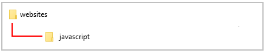
Inside this folder create a new sub-folder of the 📁 websites/javascript folder with the name exercises. 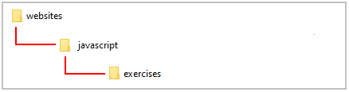
Exercise File: Writing Your First JS Code
The HTML <script> tag
Modern web pages typically contain both HTML content and JavaScript code. How does the web browser know whether is working with HTML or JavaScript at any one time?
The answer to that question is provided by the <script> … </script> tag pair. This says to the web browser:
"Everything you read between these opening and closing tags is JavaScript."
<script> Your JavaScript code goes here </script>
Exercise 1.1: Editing JavaScript Code
Exercise 1.1 take you through the steps of editing an already existing line of JavaScript code contained in a web page.
In the first js-box DIV, you can see some JavaScript code within a <div> … </div> tag pair.
<div class="js-box"> <script> document.write("Hello. This is my first script."); </script> <div>
It produces the output shown below in the web browser window.
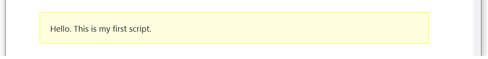In VS Code, edit the text inside the <script> … </script> tag pair as follows.
document.write("Hello. This is my very first script.");
Save and reload your web page. The result should look as shown below.
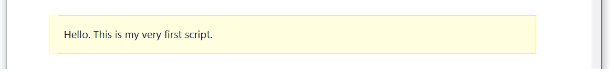Strings and concatenation
In Exercise 1.1, the text "Hello. This is my first script." is an example of a string.
In JavaScript a string is simply any collection of letters, numbers or other keyboard characters enclosed within single or double quotes.
A string can consist of one or more blank or white spaces, and nothing else. The following script writes a single blank space to the web browser window.
document.write(" ");
String
One or more letters, numbers, symbols, punctuation characters or blank spaces, enclosed within a pair of quotes. Generally, double (" ") rather than single (' ') quotes are used to enclose a string.
You can join two or more strings together so that they display as a single string in the web browser window. String joining is achieved with the plus (+) operator, and is known as concatenation. Consider the following script.
document.write("Last train"+"to Clarksville.");
This produces the following output in a web browser.

Notice anything missing? Yes: a single white space at the location where the two strings join together. You can edit the code in any one of three ways to correct this problem.
- One approach is to amend the first string by inserting a white space at the end of it.
document.write("Last train "+"to Clarksville."); - A second approach is to amend the second string by inserting a white space at the start of it.
document.write("Last train"+" to Clarksville."); - A third approach is to insert the white space as a separate third string between the two existing strings.
The result is not two but three strings joined together.
document.write("Last train"+" "+"to Clarksville.");
Whichever approach you take the corrected code displays as follows in the browser window.
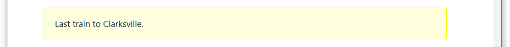Concatenation
The joining together of separate strings with the plus (+) operator so that they display as a single string in the web browser window. You may need to insert white space characters to preserve readability between joined strings.
Exercise 1.2: Concatenating strings
Exercise 1.2 takes you through the steps of concatenating a number of strings.
In the second js-box DIV, you can see some JavaScript code within a <div> … </div> tag pair.
document.write("Thank you for visiting my web page.");
Edit the script code as shown below.
document.write("Thank "+"you for visiting "+"my web"+" "+"page.");
Save your web page and reload your web browser.
The result should look as shown below.
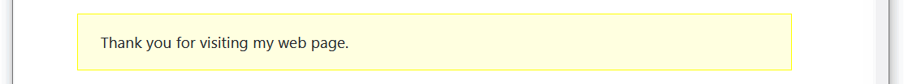Typing and escaping special characters
All characters are not the same, at least not when used with JavaScript statements.
There are a number of keyboard characters that produce errors when typed in JavaScript.
Among these special characters are the double quote ("), the single quote ('), the forward slash (/) and the backslash (\).
JavaScript overcomes this problem by providing a so-called escape character: the backslash (\).
Character |
Un-escaped Character |
Escaped Character |
Double quote |
" |
\" |
Single quote |
' |
\' |
Forward slash |
/ |
\/ |
Backslash |
\ |
\\ |
The following JavaScript statement does not contain an escape code (\) for the two double quotes characters ("). As you can, VS Code highlights the error with a wavy underline.

You correct this by escaping the two double quotes (") characters within the text as follows.
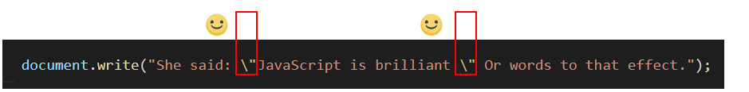Here's another example that produces an error. This one contains both double and single quotes.
document.write("She said: "I'm a huge fan of JavaScript.");
You correct this statement by escaping both types of quotes within the text as follows.
document.write("She said: \"I\'m a huge fan of JavaScript.\"");
You may want to use the forward slash (/) character when referring to file paths on a computer, and the backslash (\) character to closing tags in HTML code.
The following statement provides an example.
document.write("<b>The file is in the C:/pdfs folder.</b>");
You correct this statement by escaping both types of slashes as follows.
document.write("<b>The file is in the c:\/pdfs folder.<\/b>");
Escaped Character
A character that, when used in a JavaScript string, needs to be preceded by a backslash (\) to display correctly. Characters that need to be escaped include the double quote (\"), single quote (\'), forward slash (\/) and the backslash (\\) character itself.
In Exercise 1.3 you will practice escaping characters within a JavaScript statement.
Exercise 1.3: Escaping special characters
In the third js-box DIV, you can see some JavaScript code within a <div> … </div> tag pair.
document.write("She is certain that JavaScript is "great"");
Your web browser will not display the line of text because the double quotes are not escaped.
Edit the script code as shown below.
document.write("She is certain that JavaScript is \"great\"");
Save and reload your web page. The line of text now displays correctly.

Edit the script code as shown below.
document.write("She\'s certain that JavaScript is \"great\"");
Resave the file and reload your web browser. The line of text displays correctly because the single quote is escaped.

Edit the script code as shown below.
document.write("She\'s certain that JavaScript is <b>\"great\"<\/b>");
Resave the file and reload your web browser. The line of text displays correctly because the forward slash character in the closing </b> HTML tag is escaped. The result should look as shown below.
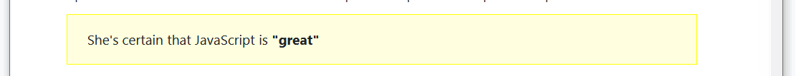You can close the exercise-1-3.html file when finished.
Combining HTML with JavaScript
You have learnt how to insert JavaScript code within a HTML document. And in the Exercise 1.3 you have discovered that the opposite is also possible: HTML tags can be inserted within JavaScript code. Consider the following example.
<script>
<i>
document.write("this string in displayed in italics.");
</i>
</script>
The above code produces an error because the web browser expects to find JavaScript code after the opening <script> tag; instead it finds the HTML <i> tag. The following code does work.
<script>
document.write("<i>this string in displayed in italics.<\/i>");
</script>
The second example differs from the first in that the <i> … </i> tag pair is now mixed in with the string text used by the script. Also notice that the forward slash (/) in the closing italic tag is escaped.
Exercise 1.4: Inserting HTML tags within a script
In Exercise 1.4 you will include HTML tags within a string to produce formatted text.
In the fourth js-box DIV, you can see some JavaScript code within a <div> … </div> tag pair.
document.write("A heading. Some text with bold formatting.");
Edit the script code as shown below.
document.write("<h1>A heading<\/h1><p>Some text with <b>bold<\/b> formatting.<\/p>");
(You should type the above code on a single line.)
Save your web page and reload your web browser.
The result should look as shown below.
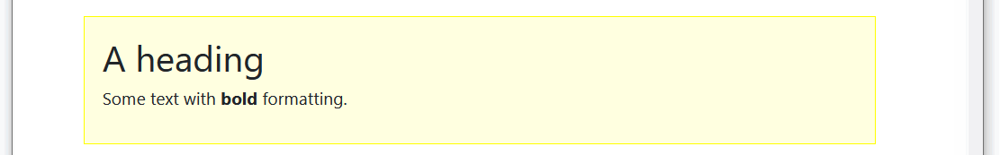You can close the exercise-1-4.html file when finished.
About single and double quotes
In JavaScript you can enclose a string within either single or double quotes. A web browser displays the following two strings in exactly the same way:
document.write("This is a sample string.");
document.write('This is a sample string.');
JavaScript programmers tend to prefer double quotes because they may want to include some text within single quotes in a string.
Commenting your scripts
It's good practice to add comments to your scripts. Text within the comment tags does not affect the working of the script, and does not display in the browser window. A sample comment is shown below.
/* This script changes the page background colour */
Comment tags always come in pairs. The opening tag is a forward slash and an asterisk; the closing tag is the reverse. Note that the asterisks go on the inside and the slashes on the outside.
The above is an example of a multi-line comment, which you can use for one, two, three or more lines of commented text.
To comment out just a single line in JavaScript, begin the line with two forward slash (//) characters.
// This script changes the page background colour
Making a JavaScript statement
In JavaScript as in other scripting and programming languages the word statement has a particular meaning.
It is an instruction to perform a particular action. The semi-colon at the end of the llne (;) acts as a statement terminator. It says to JavaScript:
"The statement you have just read is now finished."
Here are a few JavaScript statements of the kind that you will meet in future chapters with explanatory comments.
/* This statement adds two numbers */ sumTotal = firstNumber+secondNumber; /* This statement displays the result of a calculation */ window.alert(result);
/* This statement places the value of a form field in a variable */ surname = document.myform.surname_field.value;
And here is a document.write() statement of the kind you have been working with in this Lesson.
document.write("JavaScript is one word.");
JavaScript Statement
An instruction to JavaScript to perform a particular action. The semi-colon (;) acts as a statement terminator.
Avoid paragraph breaks within statements
Unlike HTML and CSS, JavaScript does not ignore line breaks created by pressing the Enter key.
Pressing the Enter key while typing a statement usually causes the statement to fail when the script is run in a web browser.
The following JavaScript statement runs without error.
document.write("Did you enjoy your visit to my web page?");
This statement, however, does result in an error.
document.write("Did you enjoy your
visit to my web page?");
Template Literals
Template Literals use back-ticks (``) rather than the quotes ("") to define a string.For example.
let text = `Hello, world`;
With template literals, you can use both single and double quotes inside a string.
let text2 = `He's often called "Johnny"`;
Template literals also allow multi-line strings.
let text = ` The quick brown fox jumps over the lazy dog`;
Template literals provide an easy way to interpolate variables and expressions into strings. This is called string interpolation.
let firstName = "Mary";
let lastName = "Smith";
console.log(`Welcome: ${firstName} ${lastName}`;)
Using the JavaScript Developer Console
Developer Tools (also known as DevTools) is an essential item in the toolbox of every front-end developer. And because DevTools are built-in to every web browser – Brave, Chrome, Safari, Edge, and Firefox or whatever – you take advantage of their many features without needing to purchase, install and configure extra software.
Opening the DevTools window
Here's a quick and easy way to open DevTools. Using your mouse, click on the three vertical dots icon at the top-right of your browser window. From the dropdown menu displayed, click the More tools option to display a second menu. On that menu, click the last option, Developer tools.
Of the nine tabs or panels within the DevTools window, we will focus on the second one, named Console.
Changing the DevTools position
To position or ‘dock’ the DevTools window:
- Open the DevTools window.
- Near the top-right of the DevTools window, click the vertical ellipses (three dots) icon.

- Click the docking position you want for the DevTools window.
Below is an example of the DevTools window docked on the right.
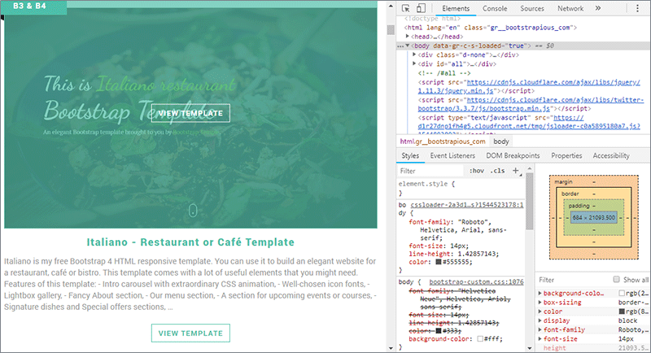And here is an example of the DevTools window docked along the bottom.
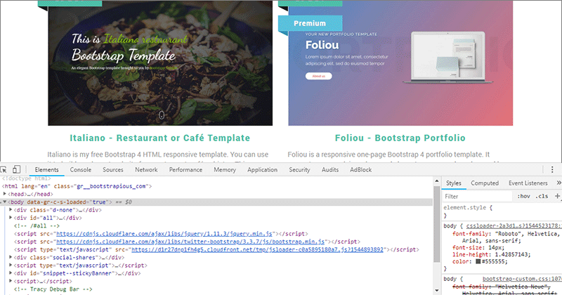Changing the DevTools font size
To change the font size in the DevTools window, press the Ctrl key followed by the plus (+) or minus (-) key. To reset, press Ctrl and 0.
Working with the Console
You can use the Console to display or 'log' information as part of your JavaScript development process. You can even use it to interact with a web page by performing JavaScript expressions within the page’s context.
You can also display into the Web Console with the keyboard shortcut Ctrl + Shift + K on Linux and Windows, or Command + Option + K on macOS.
Within the Console, you can type JavaScript code. For example, type an alert statement that outputs out the string Hello, World!:
>> alert("Hello, World!");
When you press the ENTER key, you should see the following alert pop up in your browser:

Rather than rely on annoying pop-up alerts to track the progress of your code, you can instead output messages to the Console with the console.log command.
To output the Hello, World! string, for example, you would type the following into the Console:
>> console.log("Hello, World!");
Within the console, you’ll receive the following output:
Output Hello, World!
In effect, the JavaScript Console provides you with a space to try out JavaScript code in real time by letting you use an environment similar to a terminal shell interface.
For example you can perform arithmetic in the Console:
>> console.log(2 + 6);
Output 8
External JavaScript files
You can create a text file containing only JavaScript code and embed it in one or more web pages. Such 'external' JavaScript files must be saved with the .js extension.
To use an external script, put the name of the script file in the src (source) attribute of a <script> tag:
<script src="assets/js/script.js"></script>
The script will behave as if it was located exactly where the <script> tag is located.
Here are the benefits of using external JavaScript files:
- It separates HTML and JavaScript code
- It makes HTML and JavaScript easier to read and maintain
- Cached JavaScript files can speed up page loads
Note that external scripts cannot contain <script> tag tags.